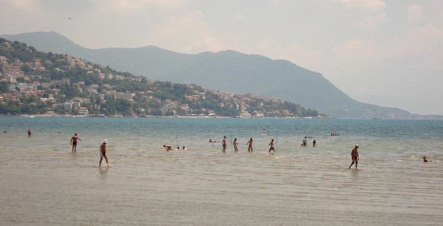

TOP 8 BEST BEACHES IN IGALO - HERCEG NOVI
Sandy, pebble, rocky or maybe concrete beach?
Igalo is known, primarily as a tourist place, and thanks to the sea mud from Mud Beach, it is the center of health tourism in Montenegro. Along the promenade and the beach, there are a large number of cafes and restaurants that entice with the smells of fish specialties, good music and a pleasant ambience.
Municipality of Herceg Novi has 25 km of coastline and 62 registered beaches is one of the reasons why it is one of the most popular resorts in Montenegro. From small intimate hidden beaches among the rocks, to larger concrete pavements with sunbeds and umbrellas.
In the summer months (July, August) the city has about 10.7 hours of sunshine a day. The sea temperature near Herceg Novi during the summer is 22 to 26 degrees, and with approximately the same air temperature, it enables a bathing season that lasts up to 5 months.
We have selected several beaches that we consider to be the most interesting and beautiful beaches in Igalo and Herceg Novi.
MUD BEACH IGALO
This is a public beach. It is located in Sutorina, about 3 km from Herceg Novi. Apart from being the largest in the Herceg Novi area (9000 m2), it is considered a spa-type beach, it is sandy in composition and composed of very healing sand. Plaza Stara Banja is a recommended beach for a family with small children. Shallow and very pleasant to play with children ... deck chairs and umbrellas are the best on the whole coast. And a restaurant with delicious food nearby. Daily menu 4 € cheap and tasty.

BEACH RAFFAELLO
This beach is considered the best and most attractive beach in Herceg Novi. Very popular sandy-pebble beach on the border of Herceg-Novi and Igalo. It is located in a part of the city called Topla, which is its real name, unlike the commercial one under which it is better known. It is filled with sand, 3,000 m2, near the beach there are cafes and restaurants, the beach is equipped with all necessary elements, there is a possibility of renting deck chairs and umbrellas ..

LA BAMBA IGALO
This beach is large and is located in the most popular part on the border of Igalo and HN. The service is good, the beach is arranged, the access to the water is inconvenient because you immediately enter the depth (about 1m) from the concrete slab. It has a mini water park as well as the possibility of renting scooters, pedal boats and other interesting content. Within the beach there is a cafe where you can relax with friends.

Ova fotografija je u vlasništvu TripAdvisora
BEACH ZANJICE (beach Žanjic)
Žanjice beach is considered one of the most beautiful in the Bay of Kotor. Žanjice beach can be reached by sea or land. It is located on the Lustica peninsula on the other side of the entrance to the bay and it is best to reach the beach by boat from Herceg Novi. these beaches.
The distance is about 4 nautical miles. If you go by land, then from Herceg Novi you have to go through Tivat, Krašić and Radović. What is a special feature of this beach is the completely natural environment. Immediately behind the beach there are olive groves that offer extraordinary shade and enjoyment even during the hottest part of the day. The 300-meter-long pebble beach with a gentle entrance to the water is a favorite vacation spot for the residents of Herceg Novi. The charming beach attracts with very clean water, beautiful view of the island of Mamula and good infrastructure.
The beach in Miriste Bay is also very interesting. Mirište is located in the bay of the same name between the bay Žanjice and Cape Mirište. The beach is partly sandy and partly concrete in harmony with nature. There is also a catering facility. Return ticket for a boat costs about 10 €.

BEACH TOPLA
City beach, partly owned by the hotel. It consists of several beaches. A combination of sand and concrete plots. The beach is within walking distance of the bus station and the main entertainment.
Infrastructure: deck chairs and parasols, locker rooms, showers, toilet, rescue service, marina, catering facilities

BEACH NEAR THE TUNNEL
One of the favorite beaches of the locals is the one located just behind the tunnel, near the entrance to the museum. It is located on the pedestrian part of the coast near the tunnel, after which it got its name. There is a beach bar nearby. It is located in a small bay and people who like small intimate beaches will especially like it. Although it is rocky, you can lie down and sunbathe comfortably on it. The entrance to the water is mild, so people with children can also choose it.

BEACH ŽALO
"Žalo" beach is located on Škver, opposite the city port on its eastern side. Some will say that this is the central place from Herceg Novi. It is especially attractive because of the many picturesque details such as the monument to King Tvrtko, the city cannon, the mule, the promenade Pet danica and the fortress Forte Mare, which literally watches over the beach. Swimming on the Beach is a kind of privilege. Although the beach is public and accessible to everyone, it is quite small and is in a place where you usually head to the promenade and not to swim. Be sure to go swimming on this beach at least once.

Speaking of the beach and bathing capacities of Herceg Novi, it is unavoidable to mention that lately, tourists are also interested in two current bathing areas. Near the city port is the beach "Yachting club". It is open to all tourists and citizens. It is made of a combination of concrete and sand. It offers a complete service. The bathing area also includes a restaurant and pizzeria. If you are a fan of exhibitions at sea, "Yachting club" offers motorcycle scooter rental, diving school training, bicycle rental…
Within the hotel "Plaza" in Herceg Novi, there is a fully equipped swimming pool, with an area of 3,600 m2, and within the swimming pool there is also a beach bar. If you decide to spend your vacation in Herceg Novi, it is best to think day by day about a new beach to visit, because there are officially 62 of them. If you want to quickly get to Herceg Novi beaches, you can choose between renting tourist taxis boats, larger taxi boats, or barges, which are mostly located in the city port. You will also get information on how to get to the beach you want to visit from the kind people of Novljan, in numerous tourist agencies, restaurants or the Tourist Organization of the city of Herceg Novi.
Herceg Novi beaches - practical information
Current prices in Herceg Novi (Montenegro)
The currency in Montenegro is the euro and here are some current prices.
1.5 liters of water in the supermarket - from 0.50 euros,
1l bottle of wine - from 1.5 euros,
entrance to the fortress - 3 euros,
ice cream - from 0.60 euros,
pizza cut - od 1,5 evra,
hamburger - od 2 evra,
canoe per hour - 5 euros,
mountain bike for 2 hours - 5 euros, all day - 15 euros,
rental of deck chairs and parasols - from 5 euros.
More information on the site Tourist Organizations of Herceg Novi